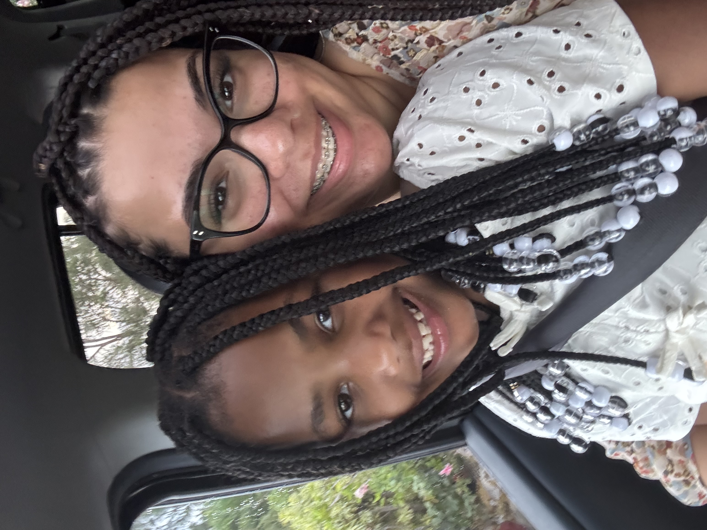

Who are We?
Hey! I'm Jasmine!! I'm a social work student at UW Madison. My family has been a foster family since 2013
and I've had the privalege of helping to care for so many amazing and sweet kids.
Besides school and helping with all of our placements, I love all things girlie: makeup, hair, bows, nails, cute outfits, and everything else!
This inspired me to start The Braid Project.
I also really want you to meet my little bestfriend, Jenny. She's the funniest, cutest little sister anyone could ever ever have.
After being an emergency foster placement, my family adopted Jenny in 2019, along with her twin brother, Mateo. She is
full of energy, creativity, sass, but she still has the kindest heart.
With Jenny, my braiding journey started.
I learned to do styles little by little, and now I do her hair all the time. I see how a style lights up Jen's face and I want to bring that to other little girls just like her.
Oh, one more quick introduction: my other half, Matthew.
Matthew is my web developer, my hair assistant, and my big best friend. Despite being an engineer, I like to put him to work twisting, braiding, and beading too.
